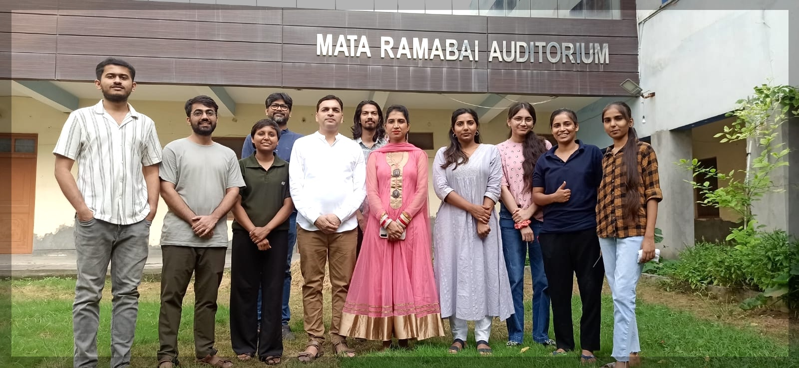
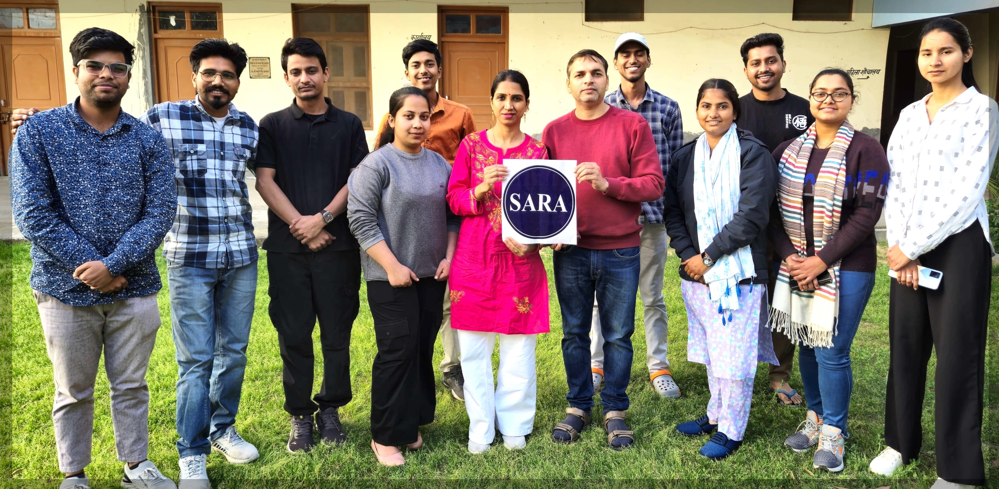
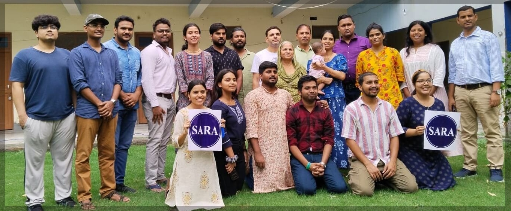

Welcome
2nd SARA Coding Bootcamp
20-22 Mar 2026 \(\cdot\) Sonipat (HR)
🌺 🙏🏽 🌼


🌺 🙏🏽 🌼
Savitribai Ramabai (SARA) Institute of Data Science
Free & Open-source Courses

English Language

Computer Skills

Data Science

Research Methods
Free Data Science Trainings
Data Schools & Bootcamp






Dr. Ajay Kumar Koli,
Executive Director, SARA Institute
Dr. Kiran Lata,
Director, SARA Institute
Dr. Ambedkar Bhawan,
Kakroi Road, Near Dayanand Hospital,
nipat - 131001, Haryana, India.
925 315 2024
sara.institute.info@gmail.com
SARA Website https://sara-edu.netlify.app/
Follow SARA Institute on Social Media.